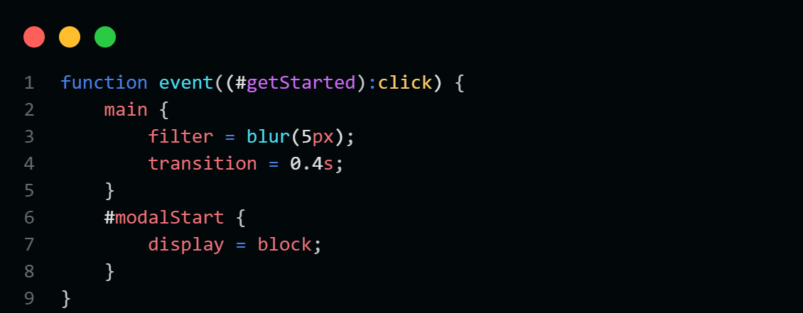
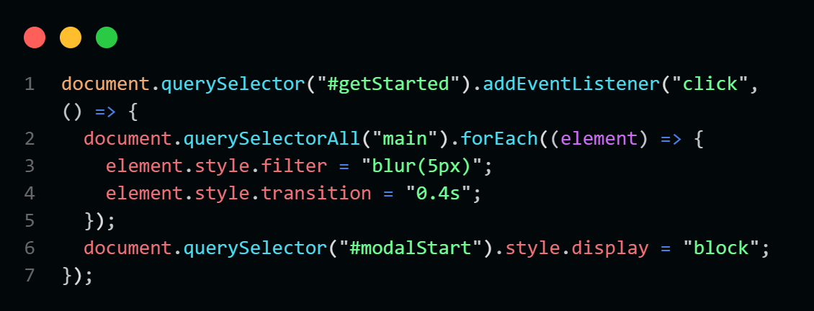

JSS
Introducing JSS, an innovative preprocessor that bridges the gap between JavaScript and CSS, offering a unique and powerful syntax to enhance your web development experience. JSS combines the flexibility and dynamic capabilities of JavaScript with the simplicity and elegance of CSS, empowering developers to create more responsive and interactive web applications effortlessly.
How does it work ?
Our JavaScript-based preprocessor, JSS, enables writing enhanced JavaScript and CSS with a unique syntax. Using PEGJS, we developed a custom grammar and parser that reads your JSS code via the file system (fs) and converts it into a JSON-like abstract syntax tree (AST).
The parser validates your code with conditional checks and assigns features to handling functions. Simple CSS properties are converted to standard CSS, while complex features are transpiled into JavaScript.
JSS supports advanced features like variable management, event handling, and conditional logic within styles, allowing for dynamic and responsive designs.
Finally, the preprocessor generates jss.css for CSS styles and jss.js for JavaScript functionalities, ready to be linked to your web page. Integrating JSS enhances your ability to create dynamic, interactive web applications.
Example
From
JSS syntax
This is a simple event function that listen to the element with the ID #getStarted and apply the styles inside if it was clicked.
To
JavaScript Code
This is the code that our framework JSS generates from the previous JSS syntax.
Key Differences
JSS
JavaScript Style Sheets
Assign styles using ' = '
Use JavaScript-style properties (e.g., zIndex, fontSize)
Utilize JavaScript events as pseudo-classes.
Introduce new style properties such as innerHTML, textContent, and more.
Support for functions in events and auto-called delay functions.
Real-time relative style properties provided by JSS Tunnels.
Style blocks as variables.
Clone styles of other elements using arrow-style functions.
And Much More...
JSS framework is under continuous development with frequent updates and fixes.
CSS
Cascading Style Sheets
Assign styles using ' : '
CSS properties with dashes ('-')
Supports only static pseudo-classes like :hover, :active...
No support for inner content of text or elements.
Not found
Not found
Not found
Not found
Not found
No fixed update schedule.
Installation Guide
Prerequisites
Before installing JSS, you need to have the following prerequisites installed on your machine:
- Node.js
- npm
To check if you have Node.js installed, run the following command in your terminal:
node -v
Don't forget to check npm as well by running the following command in your terminal:
npm -v
Installation
To install JSS, you need to run the following command in your terminal:
git clone https://github.com/othman4dev/JSSv2.0.git
This will clone the JSS repository to your local machine.
After cloning the repository, navigate to the JSS directory:
cd JSSv2.0
now run the following command:
npm install
This will install all the necessary dependencies for JSS.
To start using JSS, run the following command:
npm run jss
For Help and more information run the following command:
npm run jss:help
Learn About JSS
Now since you have installed JSS, you can start learning about it by reading our documentation or simply watching our tutorial on youtube.
Youtube Tutorial
Watch our comprehensive tutorial on JSS, this is the best way to get you started quickly
Documentation
Explore our comprehensive documentation, packed with detailed examples and educational content to help you master JSS quickly and effectively.
Read on our website
Or
Download it in PDF Format.
Comming In JSS 2.1
JSS Animations
JSS Animations is a new feature that will be added to JSS in the upcoming release. This feature will allow developers to create dynamic and interactive animations using JSS syntax. With JSS Animations, you can easily define animations for elements on your web page, such as fading in and out, sliding, rotating, and more. This feature will provide a simple and intuitive way to create animations without the need for complex CSS or JavaScript code.
We will be looking at something like this :
@keyframes loading {
from {
transform = rotate(0deg);
}
to {
transform = rotate(360deg);
}
}
#btn:click {
animationName = loading;
}
@keyframes loading {
from {
transform = rotate(0deg);
}
to {
transform = rotate(360deg);
}
}
#btn:click {
animationName = loading;
}
More Propreties
JSS will be adding more properties to its syntax in the upcoming release. These properties will provide developers with additional options for styling elements on their web pages. Some of the new properties that will be added include innerHTML, textContent, and more. These properties will allow developers to manipulate the content of elements directly from their JSS code, making it easier to create dynamic and interactive web applications.
Here is a list of new propreties that will be included in JSS :
#example {
innerHTML = `<h1> JSS </h1>`;
outerHTML = `<h1> JSS </h1>`;
innerText = "JSS" ;
textContent = "JSS" ;
value = "example@email.com" ;
src = "https://example.com/image.jpg" ;
href = "https://example.com";
classes = 'bi bi-x-lg';
disabled = true;
checked = false;
+('any HTML attribute') = 'any value';
}
//Some for readonly properties
if ( (#example)->liveWidth > 100px ) {
... code here;
}
if ( (#example)->liveHeight < 5rem ) {
... code here;
}
//And More...
#example {
innerHTML = `...`;
outerHTML = `...`;
innerText = "JSS" ;
textContent = "JSS" ;
value = "..." ;
src = "..." ;
href = "...";
classes = '...';
disabled = true;
checked = false;
+('any HTML attribute') = 'any value';
}
//Some for readonly properties
if ( (#example)->liveWidth > 100px ) {
... code here;
}
if ( (#example)->liveHeight < 5rem ) {
... code here;
}
//And More...
Those propreties can be used in any block like conditionals, events or functions.
Media Queries
This feature will allow developers to create responsive designs that adapt to different screen sizes and devices. With JSS Media Queries, you can define styles for specific screen sizes, orientations, and resolutions, ensuring that your web applications look great on any device. This feature will provide a simple and intuitive way to create responsive designs without the need for complex CSS or JavaScript code.
We will be looking at something like this
@media screen and (max-width: 600px) {
#example {
color = (#div15)->color;
}
}
@media screen and (max-width: 600px) {
#example {
color = (#div15)->color;
}
}
Development Server
This will make debugging and testing your JSS code much easier. The development server will provide a live preview of your JSS styles and JavaScript functionalities, allowing you to see the changes in real-time as you make them. This will help you identify and fix any issues with your code quickly and efficiently, making the development process smoother and more productive.
This server is designed to enhance development speed and performance by transpiling only the newly written JSS code, while leaving the unchanged portions of the code intact.
By running this :
npm run jss:server